Master of Engineering (Civil)
CQUniversity, Melbourne Campus, Australia
- Structural design
- Pavement design
- Traffic analysis
- Geotechnical
Civil Engineer
Structures, Transport and Geotechnical. Master of Engineering (Civil) at CQUniversity, Melbourne.
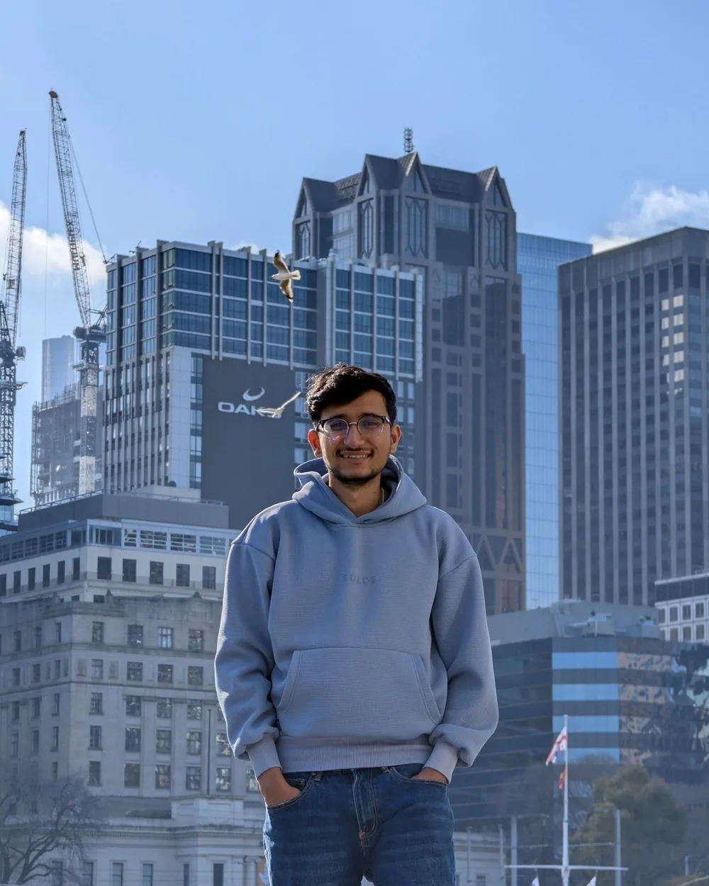
Civil engineer with a Bachelor's from Pulchowk Campus, now completing a Master of Engineering (Civil) in Melbourne.
I have done road survey, design and cost estimation, and taught senior-secondary mathematics. I am looking for a civil engineering role where I can apply design and teamwork skills.
CQUniversity, Melbourne Campus, Australia
Pulchowk Campus, Lalitpur, Nepal
Notion Engineering Consultancy Pvt. Ltd., Nepal
Trinity International Secondary School/College, Nepal
Team design of a 15 m span, 30 m long industrial shed. Modelled in SPACE GASS with wind and gravity loads, then checked the rafter, columns and a bolted knee connection to AS 4100.
AS 4100 · AS/NZS 1170 series · SPACE GASS
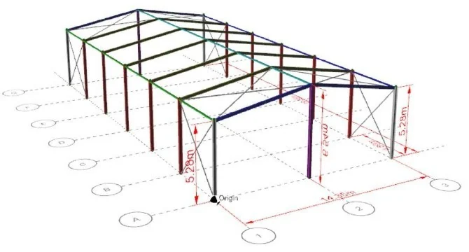
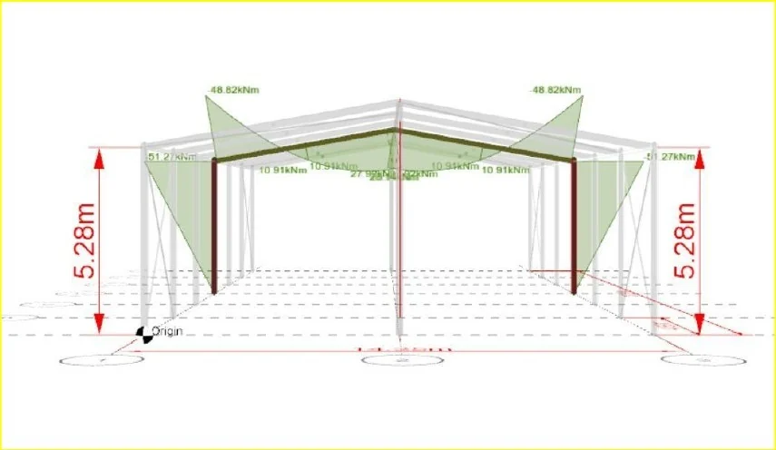
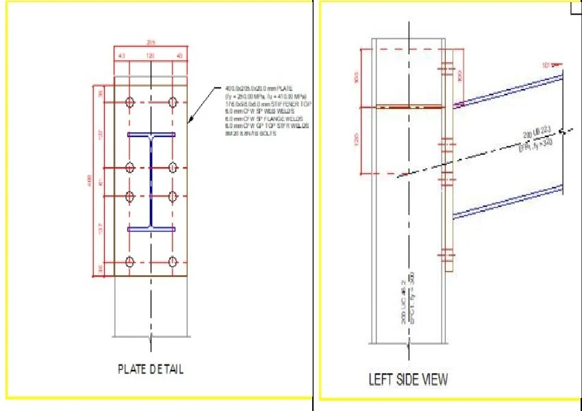
The unreinforced 1996 brick wall failed in vertical bending, so designed a replacement reinforced concrete masonry wall that met every check. Built the design in an Excel workbook and produced an AutoCAD wall drawing and a SketchUp model..
AS 3700 · AS/NZS 1170 series · Excel · AutoCAD · SketchUp
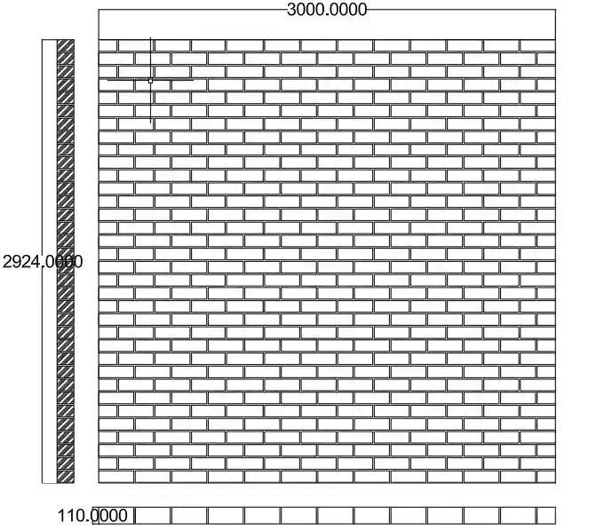
Design to AS 3600: a two-span prestressed beam (2 × 20 m, three 12-strand tendons) and a three-storey shopping building in Darwin, with flat slab, slab on beams, roof slab, beam and column.
AS 3600 · Hand calculation · Excel
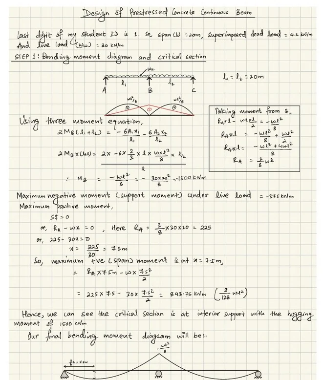
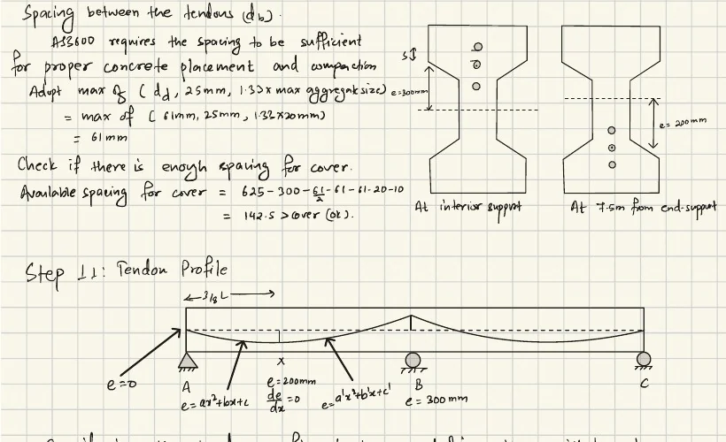
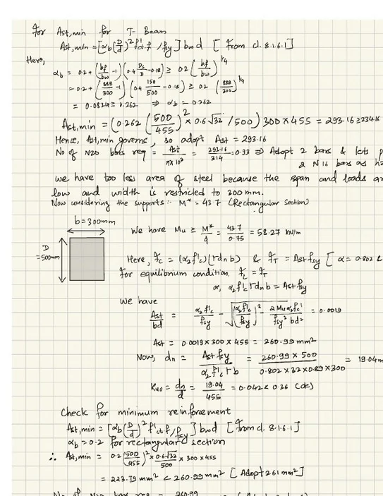
Four flexible pavements and two rigid options for a 34-year design life and about 9.3 million DESA on a CBR 3% subgrade. Damage factors checked in CIRCLY against spreadsheet calculations.
Austroads · CIRCLY · Excel
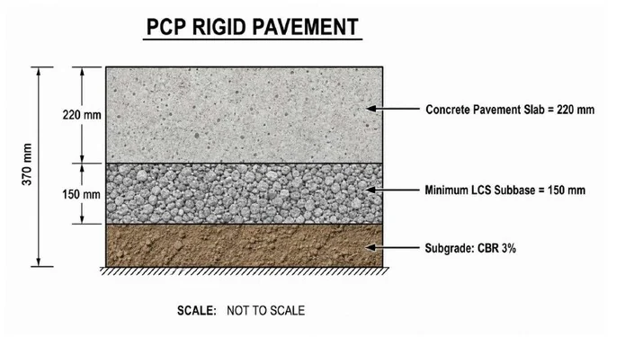
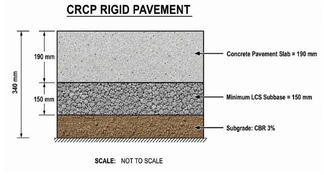
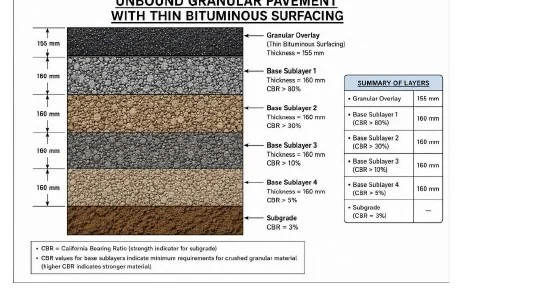
An existing two-lane highway segment operates at level of service D, while a multilane upgrade or a freeway gives A. Intersections were worked by hand and checked in SIDRA, where a single-lane roundabout gave the lowest delay.
HCM · SIDRA Intersection · Austroads
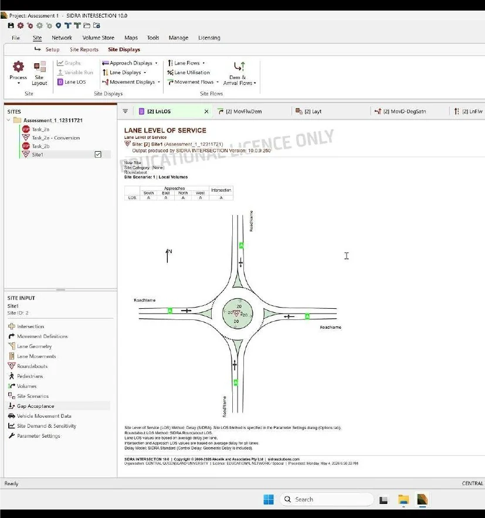
A finite-element model of consolidation under a 100 kPa load with vertical drains, compared with a Terzaghi hand calculation. A brick wall that failed in vertical bending to AS 3700 was replaced with a reinforced masonry design that passed every check.
SigmaW (GeoStudio) · AS 3700 · AutoCAD · SketchUp
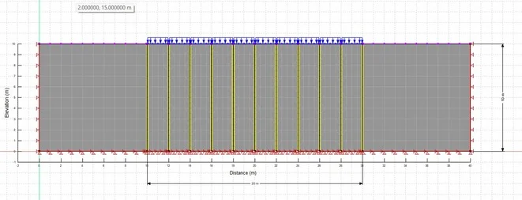
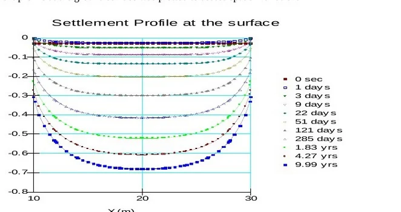
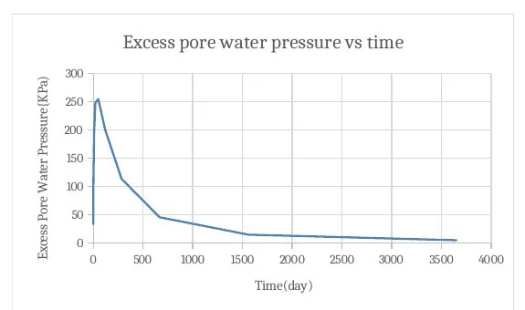
Team leader of six. Survey, geometric, pavement and drainage design and a cost estimate for about 2.5 km of district road from the TU Curriculum Development Centre to Umadevi Temple, Kirtipur.
NRRS 2071 · IRC · Road Note 31 · Total station
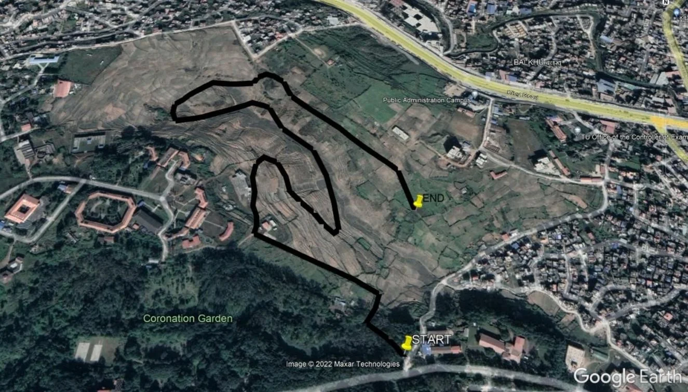
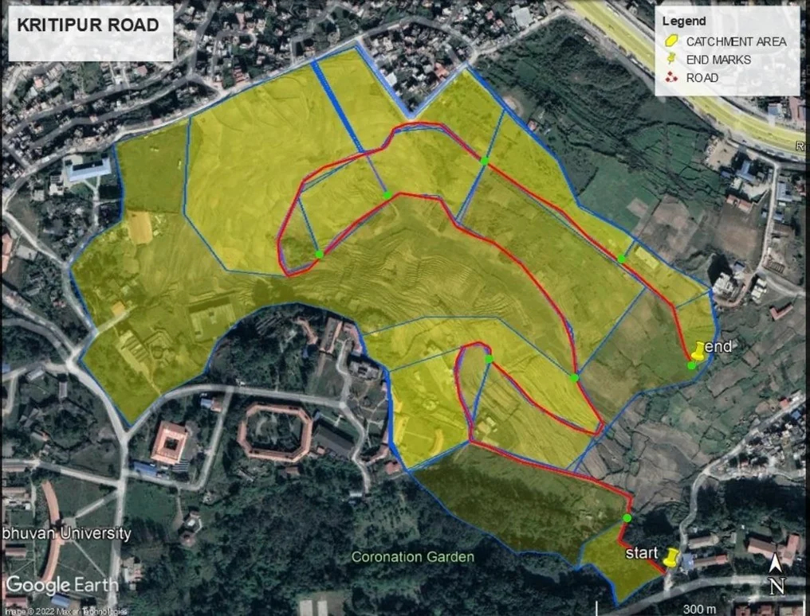
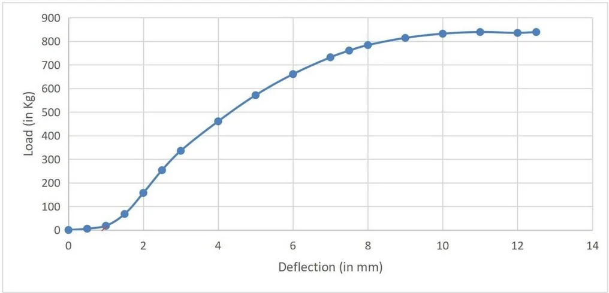
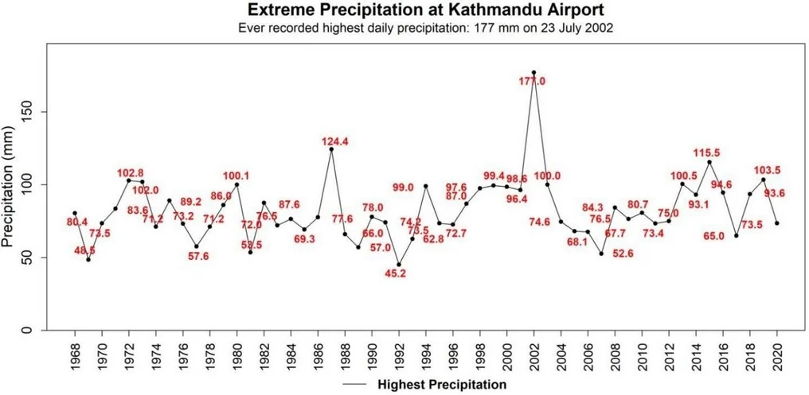
Research plan to replace 5 to 20% of cement in M4 mortar with calcined oyster shell and waste glass powder. Tests: flow, density, absorption, compressive strength, SEM and XRD. Material preparation is done and heating is under way.
Compressive strength · SEM · XRD
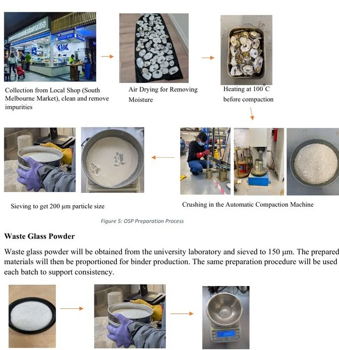
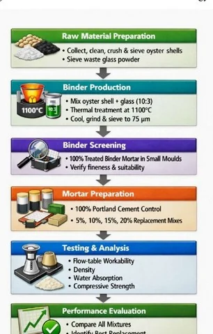
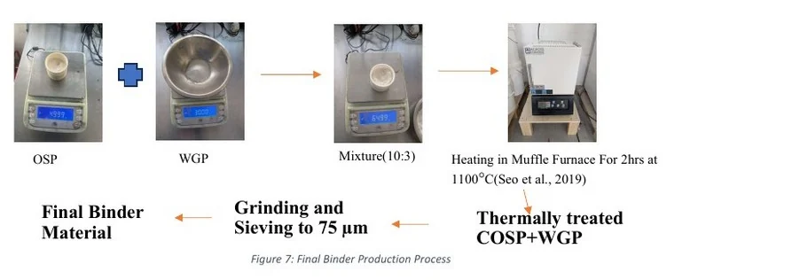
Open to civil engineering roles in Melbourne and across Australia.
arunsapkota321@gmail.com